CS301_Proj10
Introduction
For your final CS 301 project, you’re going to analyze the whole world!
Specifically, you’re going to study various statistics for 174 countries, answering questions such as: what is the correlation between a country’s literacy rate and GDP?
To start, download test.py and expected.html. You’ll also need to
download lint.py (see linter documentation under “Testing” below).
Do not download any data files manually (you must write Python code to
download these automatically). You’ll do all your work in a
main.ipynb.
Data
For this project, you’ll be using one large JSON file with statistics about 174 countries adapted from here. and you will also extract data from a snapshot of this page.
First check these resources:
- https://raw.githubusercontent.com/tylerharter/caraza-harter-com/master/tyler/cs301/fall19/data/countries.json
- http://techslides.com/list-of-countries-and-capitals
Some of the columns require a little extra explanation:
- area: measured in square miles
- coastline: ratio of coast to area
- birth-rate: births per 1000 people per year
- death-rate: deaths per 1000 people per year
- infant-mortality: per 1000 births
- literacy: (out of 100%)
- phones: number of phone per 1000 people
#project: p10
#submitter: naixinzhang
#partner: noneimport pandas as pd
import requests,json
from bs4 import BeautifulSoup
import os
from pandas import DataFrame, Series
from math import radians, cos, sin, asin, sqrt
import numpy as np
import matplotlib.pyplot as pltdef download(filename, url):
# We do not download again if the file already exists
if os.path.exists(filename):
return (str(filename) + " already exists!")
else:
r = requests.get(url)
r.raise_for_status()
data = r.text
f = open(filename, "w", encoding="utf-8")
f.write(data)
f.close()
return (str(filename) + " created!")download("countries.json","https://raw.githubusercontent.com/tylerharter/caraza-harter-com/master/tyler/cs301/fall19/data/countries.json")'countries.json already exists!'countries = pd.read_json('countries.json')
countries| area | birth-rate | coastline | continent | country | death-rate | gdp-per-capita | infant-mortality | literacy | net-migration | phones | population | region | |
|---|---|---|---|---|---|---|---|---|---|---|---|---|---|
| 0 | 756950 | 15.23 | 0.85 | South America | Chile | 5.81 | 9900 | 8.80 | 96,2 | 0.00 | 213,0 | 16134219 | LATIN AMER. & CARIB |
| 1 | 665 | 17.80 | 24.21 | Asia | Bahrain | 4.14 | 16900 | 17.27 | 89,1 | 1.05 | 281,3 | 698585 | NEAR EAST |
| 2 | 22966 | 28.84 | 1.68 | North America | Belize | 5.72 | 4900 | 25.69 | 94,1 | 0.00 | 115,7 | 287730 | LATIN AMER. & CARIB |
| 3 | 582650 | 39.72 | 0.09 | Africa | Kenya | 14.02 | 1000 | 61.47 | 85,1 | -0.10 | 8,1 | 34707817 | SUB-SAHARAN AFRICA |
| 4 | 11854 | 33.05 | 3.12 | Australia | Marshall Islands | 4.78 | 1600 | 29.45 | 93,7 | -6.04 | 91,2 | 60422 | OCEANIA |
| 5 | 111370 | 44.77 | 0.52 | Africa | Liberia | 23.10 | 1000 | 128.87 | 57,5 | 0.00 | 2,3 | 3042004 | SUB-SAHARAN AFRICA |
| 6 | 504782 | 10.06 | 0.98 | Europe | Spain | 9.72 | 22000 | 4.42 | 97,9 | 0.99 | 453,5 | 40397842 | WESTERN EUROPE |
| 7 | 65610 | 15.51 | 2.04 | Asia | Sri Lanka | 6.52 | 3700 | 14.35 | 92,3 | -1.31 | 61,5 | 20222240 | ASIA (EX. NEAR EAST) |
| 8 | 212460 | 36.24 | 0.98 | Asia | Oman | 3.81 | 13100 | 19.51 | 75,8 | 0.28 | 85,5 | 3102229 | NEAR EAST |
| 9 | 316 | 10.22 | 62.28 | Europe | Malta | 8.10 | 17700 | 3.89 | 92,8 | 2.07 | 505,0 | 400214 | WESTERN EUROPE |
| 10 | 185180 | 27.76 | 0.10 | Asia | Syria | 4.81 | 3300 | 29.53 | 76,9 | 0.00 | 153,8 | 18881361 | NEAR EAST |
| 11 | 1759540 | 26.49 | 0.10 | Africa | Libya | 3.48 | 6400 | 24.60 | 82,6 | 0.00 | 127,1 | 5900754 | NORTHERN AFRICA |
| 12 | 752614 | 41.00 | 0.00 | Africa | Zambia | 19.93 | 800 | 88.29 | 80,6 | 0.00 | 8,2 | 11502010 | SUB-SAHARAN AFRICA |
| 13 | 10991 | 20.82 | 9.30 | North America | Jamaica | 6.52 | 3900 | 12.36 | 87,9 | -4.92 | 124,0 | 2758124 | LATIN AMER. & CARIB |
| 14 | 447400 | 26.36 | 0.00 | Asia | Uzbekistan | 7.84 | 1700 | 71.10 | 99,3 | -1.72 | 62,9 | 27307134 | C.W. OF IND. STATES |
| 15 | 61 | 10.02 | 0.00 | Europe | San Marino | 8.17 | 34600 | 5.73 | 96,0 | 10.98 | 704,3 | 29251 | WESTERN EUROPE |
| 16 | 488100 | 27.61 | 0.00 | Asia | Turkmenistan | 8.60 | 5800 | 73.08 | 98,0 | -0.86 | 74,6 | 5042920 | C.W. OF IND. STATES |
| 17 | 33843 | 15.70 | 0.00 | Europe | Moldova | 12.64 | 1800 | 40.42 | 99,1 | -0.26 | 208,1 | 4466706 | C.W. OF IND. STATES |
| 18 | 28748 | 15.11 | 1.26 | Europe | Albania | 5.22 | 4500 | 21.52 | 86,5 | -4.93 | 71,2 | 3581655 | EASTERN EUROPE |
| 19 | 53 | 11.40 | 194.34 | North America | Bermuda | 7.74 | 36000 | 8.53 | 98,0 | 2.49 | 851,4 | 65773 | NORTHERN AMERICA |
| 20 | 803940 | 29.74 | 0.13 | Asia | Pakistan | 8.23 | 2100 | 72.44 | 45,7 | -2.77 | 31,8 | 165803560 | ASIA (EX. NEAR EAST) |
| 21 | 30528 | 10.38 | 0.22 | Europe | Belgium | 10.27 | 29100 | 4.68 | 98,0 | 1.23 | 462,6 | 10379067 | WESTERN EUROPE |
| 22 | 47000 | 33.65 | 0.00 | Asia | Bhutan | 12.70 | 1300 | 100.44 | 42,2 | 0.00 | 14,3 | 2279723 | ASIA (EX. NEAR EAST) |
| 23 | 587040 | 41.41 | 0.82 | Africa | Madagascar | 11.11 | 800 | 76.83 | 68,9 | 0.00 | 3,6 | 18595469 | SUB-SAHARAN AFRICA |
| 24 | 17363 | 27.41 | 0.00 | Africa | Swaziland | 29.74 | 4900 | 69.27 | 81,6 | 0.00 | 30,8 | 1136334 | SUB-SAHARAN AFRICA |
| 25 | 4167 | 16.68 | 60.60 | Australia | French Polynesia | 4.69 | 17500 | 8.44 | 98,0 | 2.94 | 194,5 | 274578 | OCEANIA |
| 26 | 64589 | 9.24 | 0.82 | Europe | Latvia | 13.66 | 10200 | 9.55 | 99,8 | -2.23 | 321,4 | 2274735 | BALTICS |
| 27 | 93030 | 9.72 | 0.00 | Europe | Hungary | 13.11 | 13900 | 8.57 | 99,4 | 0.86 | 336,2 | 9981334 | EASTERN EUROPE |
| 28 | 693 | 9.34 | 27.85 | Asia | Singapore | 4.28 | 23700 | 2.29 | 92,5 | 11.53 | 411,4 | 4492150 | ASIA (EX. NEAR EAST) |
| 29 | 160 | 10.21 | 0.00 | Europe | Liechtenstein | 7.18 | 25000 | 4.70 | 100,0 | 4.85 | 585,5 | 33987 | WESTERN EUROPE |
| ... | ... | ... | ... | ... | ... | ... | ... | ... | ... | ... | ... | ... | ... |
| 144 | 267667 | 36.16 | 0.33 | Africa | Gabon | 12.25 | 5500 | 53.64 | 63,2 | 0.00 | 27,4 | 1424906 | SUB-SAHARAN AFRICA |
| 145 | 13790 | 12.77 | 3.63 | North America | Puerto Rico | 7.65 | 16800 | 8.24 | 94,1 | -1.46 | 283,1 | 3927188 | LATIN AMER. & CARIB |
| 146 | 338145 | 10.45 | 0.37 | Europe | Finland | 9.86 | 27400 | 3.57 | 100,0 | 0.95 | 405,3 | 5231372 | WESTERN EUROPE |
| 147 | 1240000 | 49.82 | 0.00 | Africa | Mali | 16.89 | 900 | 116.79 | 46,4 | -0.33 | 6,4 | 11716829 | SUB-SAHARAN AFRICA |
| 148 | 2170 | 36.93 | 15.67 | Africa | Comoros | 8.20 | 700 | 74.93 | 56,5 | 0.00 | 24,5 | 690948 | SUB-SAHARAN AFRICA |
| 149 | 7686850 | 12.14 | 0.34 | Australia | Australia | 7.51 | 29000 | 4.69 | 100,0 | 3.98 | 565,5 | 20264082 | OCEANIA |
| 150 | 825418 | 24.32 | 0.19 | Africa | Namibia | 18.86 | 7200 | 48.98 | 84,0 | 0.00 | 62,6 | 2044147 | SUB-SAHARAN AFRICA |
| 151 | 181040 | 26.90 | 0.24 | Asia | Cambodia | 9.06 | 1900 | 71.48 | 69,4 | 0.00 | 2,6 | 13881427 | ASIA (EX. NEAR EAST) |
| 152 | 236040 | 47.35 | 0.00 | Africa | Uganda | 12.24 | 1400 | 67.83 | 69,9 | 0.00 | 3,6 | 28195754 | SUB-SAHARAN AFRICA |
| 153 | 945087 | 37.71 | 0.15 | Africa | Tanzania | 16.39 | 600 | 98.54 | 78,2 | -2.06 | 4,0 | 37445392 | SUB-SAHARAN AFRICA |
| 154 | 27830 | 42.22 | 0.00 | Africa | Burundi | 13.46 | 600 | 69.29 | 51,6 | -0.06 | 3,4 | 8090068 | SUB-SAHARAN AFRICA |
| 155 | 82880 | 18.96 | 1.59 | Asia | United Arab Emirates | 4.40 | 23200 | 14.51 | 77,9 | 1.03 | 475,3 | 2602713 | NEAR EAST |
| 156 | 329750 | 22.86 | 1.42 | Asia | Malaysia | 5.05 | 9000 | 17.70 | 88,7 | 0.00 | 179,0 | 24385858 | ASIA (EX. NEAR EAST) |
| 157 | 78866 | 9.02 | 0.00 | Europe | Czech Republic | 10.59 | 15700 | 3.93 | 99,9 | 0.97 | 314,3 | 10235455 | EASTERN EUROPE |
| 158 | 514000 | 13.87 | 0.63 | Asia | Thailand | 7.04 | 7400 | 20.48 | 92,6 | 0.00 | 108,9 | 64631595 | ASIA (EX. NEAR EAST) |
| 159 | 70280 | 14.45 | 2.06 | Europe | Ireland | 7.82 | 29600 | 5.39 | 98,0 | 4.99 | 500,5 | 4062235 | WESTERN EUROPE |
| 160 | 18270 | 22.55 | 6.18 | Australia | Fiji | 5.65 | 5800 | 12.62 | 93,7 | -3.14 | 112,6 | 905949 | OCEANIA |
| 161 | 2717300 | 16.00 | 0.00 | Asia | Kazakhstan | 9.42 | 6300 | 29.21 | 98,4 | -3.35 | 164,1 | 15233244 | C.W. OF IND. STATES |
| 162 | 1564116 | 21.59 | 0.00 | Asia | Mongolia | 6.95 | 1800 | 53.79 | 97,8 | 0.00 | 55,1 | 2832224 | ASIA (EX. NEAR EAST) |
| 163 | 198500 | 22.80 | 0.00 | Asia | Kyrgyzstan | 7.08 | 1600 | 35.64 | 97,0 | -2.45 | 84,0 | 5213898 | C.W. OF IND. STATES |
| 164 | 527970 | 42.89 | 0.36 | Asia | Yemen | 8.30 | 800 | 61.50 | 50,2 | 0.00 | 37,2 | 21456188 | NEAR EAST |
| 165 | 9984670 | 10.78 | 2.02 | North America | Canada | 7.80 | 29800 | 4.75 | 97,0 | 5.96 | 552,2 | 33098932 | NORTHERN AMERICA |
| 166 | 262 | 12.74 | 61.07 | North America | Cayman Islands | 4.89 | 35000 | 8.19 | 98,0 | 18.75 | 836,3 | 45436 | LATIN AMER. & CARIB |
| 167 | 118480 | 43.13 | 0.00 | Africa | Malawi | 19.33 | 600 | 103.32 | 62,7 | 0.00 | 7,9 | 13013926 | SUB-SAHARAN AFRICA |
| 168 | 86600 | 20.74 | 0.00 | Europe | Azerbaijan | 9.75 | 3400 | 81.74 | 97,0 | -4.90 | 137,1 | 7961619 | C.W. OF IND. STATES |
| 169 | 2381740 | 17.14 | 0.04 | Africa | Algeria | 4.61 | 6000 | 31.00 | 70,0 | -0.39 | 78,1 | 32930091 | NORTHERN AFRICA |
| 170 | 103000 | 13.64 | 4.83 | Europe | Iceland | 6.72 | 30900 | 3.31 | 99,9 | 2.38 | 647,7 | 299388 | WESTERN EUROPE |
| 171 | 748 | 25.37 | 56.02 | Australia | Tonga | 5.28 | 2200 | 12.62 | 98,5 | 0.00 | 97,7 | 114689 | OCEANIA |
| 172 | 27750 | 36.44 | 6.38 | North America | Haiti | 12.17 | 1600 | 73.45 | 52,9 | -3.40 | 16,9 | 8308504 | LATIN AMER. & CARIB |
| 173 | 1284000 | 45.73 | 0.00 | Africa | Chad | 16.38 | 1200 | 93.82 | 47,5 | -0.11 | 1,3 | 9944201 | SUB-SAHARAN AFRICA |
174 rows × 13 columns
#q1 How many countries do we have in our dataset?
def get_num_countries():
return countries['country'].nunique()
get_num_countries()174#q2 what is the total area across all the countries in our dataset?
def get_total_area():
return countries['area'].sum()
get_total_area()127170843
download('capitals.html', 'https://raw.githubusercontent.com/tylerharter/cs301-projects/master/fall19/p10/techslides-snapshot.html')'capitals.html already exists!'def state_stats(path):
stats = {}
f = open(path)
html_string = f.read()
f.close()
doc = BeautifulSoup(html_string, "html.parser")
trs = doc.find_all("tr")
for tr in trs[1:]:
cells = tr.find_all("td")[:4]
j = cells[0].get_text()
stats.setdefault("country",[]).append(j)
j = cells[1].get_text()
stats.setdefault("capital",[]).append(j)
j = cells[2].get_text()
stats.setdefault("latitude",[]).append(float(j))
j = cells[3].get_text()
stats.setdefault("longitude",[]).append(float(j))
return stats
wi_stats = state_stats("capitals.html")data = DataFrame({"country":wi_stats['country'],
"capital":wi_stats['capital'],
"latitude":wi_stats['latitude'],
"longitude":wi_stats['longitude'],
})
data = data[0:]full = pd.merge(data, countries, on=['country'], how='inner')
capitals = full[['country','capital','latitude','longitude']]
capitals.head()| country | capital | latitude | longitude | |
|---|---|---|---|---|
| 0 | Afghanistan | Kabul | 34.516667 | 69.183333 |
| 1 | Albania | Tirana | 41.316667 | 19.816667 |
| 2 | Algeria | Algiers | 36.750000 | 3.050000 |
| 3 | Anguilla | The Valley | 18.216667 | -63.050000 |
| 4 | Argentina | Buenos Aires | -34.583333 | -58.666667 |
#q3 What are the country names in capitals.json?
def get_country():
res = []
for i in capitals['country']:
res.append(i)
return sorted(res)
get_country()['Afghanistan',
'Albania',
'Algeria',
'Anguilla',
'Argentina',
'Armenia',
'Aruba',
'Australia',
'Austria',
'Azerbaijan',
'Bahrain',
'Bangladesh',
'Barbados',
'Belarus',
'Belgium',
'Belize',
'Benin',
'Bermuda',
'Bhutan',
'Bolivia',
'Botswana',
'Brazil',
'Bulgaria',
'Burkina Faso',
'Burundi',
'Cambodia',
'Cameroon',
'Canada',
'Cape Verde',
'Cayman Islands',
'Chad',
'Chile',
'China',
'Colombia',
'Comoros',
'Costa Rica',
'Croatia',
'Cuba',
'Czech Republic',
'Denmark',
'Djibouti',
'Dominica',
'Dominican Republic',
'Ecuador',
'Egypt',
'El Salvador',
'Equatorial Guinea',
'Eritrea',
'Estonia',
'Ethiopia',
'Fiji',
'Finland',
'France',
'French Polynesia',
'Gabon',
'Georgia',
'Germany',
'Ghana',
'Greece',
'Grenada',
'Guam',
'Guatemala',
'Guinea',
'Guinea-Bissau',
'Guyana',
'Haiti',
'Honduras',
'Hungary',
'Iceland',
'India',
'Indonesia',
'Iran',
'Iraq',
'Ireland',
'Israel',
'Italy',
'Jamaica',
'Japan',
'Jordan',
'Kazakhstan',
'Kenya',
'Kuwait',
'Kyrgyzstan',
'Laos',
'Latvia',
'Lebanon',
'Lesotho',
'Liberia',
'Libya',
'Liechtenstein',
'Lithuania',
'Luxembourg',
'Madagascar',
'Malawi',
'Malaysia',
'Maldives',
'Mali',
'Malta',
'Marshall Islands',
'Mauritania',
'Mauritius',
'Mexico',
'Moldova',
'Monaco',
'Mongolia',
'Morocco',
'Mozambique',
'Namibia',
'Nepal',
'Netherlands',
'New Caledonia',
'New Zealand',
'Nicaragua',
'Niger',
'Nigeria',
'Norway',
'Oman',
'Pakistan',
'Palau',
'Panama',
'Papua New Guinea',
'Paraguay',
'Peru',
'Philippines',
'Poland',
'Portugal',
'Puerto Rico',
'Qatar',
'Romania',
'Russia',
'Rwanda',
'Saint Helena',
'Saint Lucia',
'Saint Vincent and the Grenadines',
'Samoa',
'San Marino',
'Saudi Arabia',
'Senegal',
'Seychelles',
'Sierra Leone',
'Singapore',
'Slovenia',
'Somalia',
'South Africa',
'Spain',
'Sri Lanka',
'Sudan',
'Suriname',
'Swaziland',
'Sweden',
'Switzerland',
'Syria',
'Taiwan',
'Tajikistan',
'Tanzania',
'Thailand',
'Togo',
'Tonga',
'Tunisia',
'Turkey',
'Turkmenistan',
'Uganda',
'Ukraine',
'United Arab Emirates',
'United Kingdom',
'United States',
'Uruguay',
'Uzbekistan',
'Vanuatu',
'Venezuela',
'Vietnam',
'Yemen',
'Zambia',
'Zimbabwe']#q4 What is the capital of Cuba?
def get_capital():
capitals_country = capitals[capitals.country == 'Cuba']
return next(iter(capitals_country['capital']))
get_capital()'Havana'#q5 Which country's capital is Tbilisi?
def get_countries():
capital = capitals[capitals.capital == 'Tbilisi']
return next(iter(capital['country']))
get_countries()'Georgia'#q6 Which 7 countries have the southern-most capitals?
def get_southern_most():
res = []
for i in capitals.sort_values(by='latitude',ascending=True)[:7]['country']:
res.append(i)
return res
get_southern_most()['New Zealand',
'Australia',
'Uruguay',
'Argentina',
'Chile',
'Lesotho',
'Swaziland']#q7 Which 5 countries have the northern-most capitals?
def get_northern_most():
res = []
for i in capitals.sort_values(by='latitude',ascending=False)[:5]['country']:
res.append(i)
return res
get_northern_most()['Iceland', 'Finland', 'Norway', 'Estonia', 'Sweden']#q8 For birth-rate and death-rate, what are various summary statistics (e.g., mean, max, standard deviation, etc)?
df = pd.DataFrame(data = {'birth-rate':countries['birth-rate'],
'death-rate':countries['death-rate']})
df.describe()| birth-rate | death-rate | |
|---|---|---|
| count | 174.000000 | 174.000000 |
| mean | 22.463851 | 9.625172 |
| std | 11.278992 | 5.187143 |
| min | 8.250000 | 2.410000 |
| 25% | 12.597500 | 6.027500 |
| 50% | 20.010000 | 8.230000 |
| 75% | 29.860000 | 11.715000 |
| max | 50.730000 | 29.740000 |
#q9 For columns literacy and phones, what are various summary statistics?
countries['literacy'] = countries['literacy'].str.replace(',', '.', regex=False)
countries['literacy'] = countries['literacy'].astype('float')
countries['phones'] = countries['phones'].str.replace(',', '.', regex=False)
countries['phones'] = countries['phones'].astype('float')
df = pd.DataFrame(data = {'literacy':countries['literacy'],
'phones':countries['phones']})
df.describe()| literacy | phones | |
|---|---|---|
| count | 174.000000 | 174.000000 |
| mean | 82.362069 | 215.770690 |
| std | 20.003166 | 218.713811 |
| min | 17.600000 | 1.300000 |
| 25% | 70.100000 | 32.000000 |
| 50% | 92.100000 | 140.350000 |
| 75% | 98.000000 | 331.750000 |
| max | 100.000000 | 1035.600000 |
#q10 What is the largest land-locked country in Europe?
def get_EU_largest_land_country():
countries_EU_land = countries.loc[(countries['continent'] == 'Europe') & (countries['coastline'] == 0)]
countries_EU_land_largest = countries_EU_land.sort_values(by='area',ascending=False).iloc[0]['country']
return countries_EU_land_largest
get_EU_largest_land_country()
'Belarus'#q11 What is the largest land-locked country in Asia?
def get_AS_largest_land_country():
countries_AS_land = countries.loc[(countries['continent'] == 'Asia') & (countries['coastline'] == 0)]
countries_AS_land_largest = countries_AS_land.sort_values(by='area',ascending=False).iloc[0]['country']
return countries_AS_land_largest
get_AS_largest_land_country()'Kazakhstan'#q12 What is the most populous land-locked country in Asia?
def get_AS_most_pop_land_country():
countries_AS_land = countries.loc[(countries['continent'] == 'Asia') & (countries['coastline'] == 0)]
countries_AS_land_most_pop = countries_AS_land.sort_values(by='population',ascending=False).iloc[0]['country']
return countries_AS_land_most_pop
get_AS_most_pop_land_country()'Afghanistan'# Haversine Formula (https://stackoverflow.com/questions/4913349/haversine-formula-in-python-bearing-and-distance-between-two-gps-points)
def haversine(lon1, lat1, lon2, lat2):
"""
Calculate the great circle distance between two points
on the earth (specified in decimal degrees)
"""
# convert decimal degrees to radians
lon1, lat1, lon2, lat2 = map(radians, [lon1, lat1, lon2, lat2])
# haversine formula
dlon = lon2 - lon1
dlat = lat2 - lat1
a = sin(dlat/2)**2 + cos(lat1) * cos(lat2) * sin(dlon/2)**2
c = 2 * asin(sqrt(a))
r = 3956 # Radius of earth in kilometers. Use 3956 for miles
return c * r#q13 What is the distance between Camp Randall Stadium and the Wisconsin State Capital?
Randall_lon = -89.411893
Randall_lat = 43.070231
Wisconsin_lon = -89.384113
Wisconsin_lat = 43.074645
haversine(Randall_lon, Randall_lat, Wisconsin_lon, Wisconsin_lat)1.433899492072933#q14 What is the distance between France and Japan?
def get_distance(country1, country2):
country1_lon = capitals.loc[(capitals['country'] == country1)].iloc[0]['longitude']
country1_lat = capitals.loc[(capitals['country'] == country1)].iloc[0]['latitude']
country2_lon = capitals.loc[(capitals['country'] == country2)].iloc[0]['longitude']
country2_lat = capitals.loc[(capitals['country'] == country2)].iloc[0]['latitude']
return haversine(country1_lon, country1_lat, country2_lon, country2_lat)
get_distance('France', 'Japan')6032.330932363535#q15 What are the distances between Guam, New Zealand, and Australia?
country_list = ["Guam", "New Zealand", "Australia"]
def get_distances(country_list):
data = {}
for country1 in country_list:
tmp = []
for country2 in country_list:
if country1 == country2:
tmp.append(np.nan)
else:
tmp.append(get_distance(country1, country2))
data[country1] = tmp
df = pd.DataFrame(data, index = country_list)
return df
get_distances(country_list)| Guam | New Zealand | Australia | |
|---|---|---|---|
| Guam | NaN | 4239.314912 | 3377.103870 |
| New Zealand | 4239.314912 | NaN | 1445.147895 |
| Australia | 3377.103870 | 1445.147895 | NaN |
#q16 What is the distance between every pair of countries in the Australian continent?
def get_distance_Australian():
country_list = []
country_AU = countries.loc[(countries['continent'] == 'Australia')]
for i in country_AU['country']:
country_list.append(i)
return get_distances(country_list)
get_distance_Australian()| Marshall Islands | French Polynesia | New Zealand | Vanuatu | Palau | Papua New Guinea | Guam | Samoa | New Caledonia | Australia | Fiji | Tonga | |
|---|---|---|---|---|---|---|---|---|---|---|---|---|
| Marshall Islands | NaN | 3159.856137 | 3348.725378 | 1727.328621 | 2516.301728 | 2019.144119 | 1861.584428 | 1849.150692 | 2054.905160 | 3263.901948 | 1806.972599 | 2151.129410 |
| French Polynesia | 3159.856137 | NaN | 2668.807328 | 2765.339382 | 5447.018761 | 4265.757856 | 4961.131713 | 1496.953816 | 2864.497308 | 3920.570216 | 2102.135722 | 1686.539411 |
| New Zealand | 3348.725378 | 2668.807328 | NaN | 1671.641167 | 4218.188412 | 2767.607095 | 4239.314912 | 2062.548020 | 1400.483623 | 1445.147895 | 1613.916992 | 1510.219450 |
| Vanuatu | 1727.328621 | 2765.339382 | 1671.641167 | NaN | 2882.041892 | 1527.495923 | 2687.395771 | 1349.904435 | 335.602971 | 1687.810709 | 663.967196 | 1098.016273 |
| Palau | 2516.301728 | 5447.018761 | 4218.188412 | 2882.041892 | NaN | 1453.306058 | 800.243081 | 3956.305436 | 2974.892838 | 3099.023227 | 3468.037102 | 3931.843110 |
| Papua New Guinea | 2019.144119 | 4265.757856 | 2767.607095 | 1527.495923 | 1453.306058 | NaN | 1591.171595 | 2789.123270 | 1552.708901 | 1786.749660 | 2174.712829 | 2623.742354 |
| Guam | 1861.584428 | 4961.131713 | 4239.314912 | 2687.395771 | 800.243081 | 1591.171595 | NaN | 3520.883355 | 2871.868601 | 3377.103870 | 3165.570014 | 3617.512808 |
| Samoa | 1849.150692 | 1496.953816 | 2062.548020 | 1349.904435 | 3956.305436 | 2789.123270 | 3520.883355 | NaN | 1542.152644 | 2840.091065 | 716.316054 | 553.393188 |
| New Caledonia | 2054.905160 | 2864.497308 | 1400.483623 | 335.602971 | 2974.892838 | 1552.708901 | 2871.868601 | 1542.152644 | NaN | 1375.924712 | 825.890876 | 1179.069567 |
| Australia | 3263.901948 | 3920.570216 | 1445.147895 | 1687.810709 | 3099.023227 | 1786.749660 | 3377.103870 | 2840.091065 | 1375.924712 | NaN | 2145.768971 | 2362.766922 |
| Fiji | 1806.972599 | 2102.135722 | 1613.916992 | 663.967196 | 3468.037102 | 2174.712829 | 3165.570014 | 716.316054 | 825.890876 | 2145.768971 | NaN | 463.843872 |
| Tonga | 2151.129410 | 1686.539411 | 1510.219450 | 1098.016273 | 3931.843110 | 2623.742354 | 3617.512808 | 553.393188 | 1179.069567 | 2362.766922 | 463.843872 | NaN |
#q17 What is the most central country in the Australian continent?
def get_most_central_AU():
df_AU = get_distance_Australian()
df_AU_mean = df_AU.mean(axis = 1, numeric_only = True)
df_AU_mean = df_AU_mean.sort_values(ascending=True)
return df_AU_mean.index[0]
get_most_central_AU()'Vanuatu'#q18 What is the least central country in Australia?
def get_least_central_AU():
df_AU = get_distance_Australian()
df_AU_mean = df_AU.mean(axis = 1, numeric_only = True)
df_AU_mean = df_AU_mean.sort_values(ascending=False)
return df_AU_mean.index[0]
get_least_central_AU()'French Polynesia'#q19 How close is each country in Australia to it's nearest neighbor?
def AU_nearest_neighbor():
df_AU = get_distance_Australian()
df_AU_idxmin = df_AU.idxmin()
df_AU_min = df_AU.min()
country_list = df_AU_min.index
data = {'nearest':df_AU_idxmin.values, 'distance':df_AU_min.values}
df = pd.DataFrame(data, index = country_list)
return df
AU_nearest_neighbor()| nearest | distance | |
|---|---|---|
| Marshall Islands | Vanuatu | 1727.328621 |
| French Polynesia | Samoa | 1496.953816 |
| New Zealand | New Caledonia | 1400.483623 |
| Vanuatu | New Caledonia | 335.602971 |
| Palau | Guam | 800.243081 |
| Papua New Guinea | Palau | 1453.306058 |
| Guam | Palau | 800.243081 |
| Samoa | Tonga | 553.393188 |
| New Caledonia | Vanuatu | 335.602971 |
| Australia | New Caledonia | 1375.924712 |
| Fiji | Tonga | 463.843872 |
| Tonga | Fiji | 463.843872 |
#q20 How far is each country in Australia to it's furthest neighbor?
def AU_furthest_neighbor():
df_AU = get_distance_Australian()
df_AU_idxmax = df_AU.idxmax()
df_AU_max = df_AU.max()
country_list = df_AU_max.index
data = {'furthest':df_AU_idxmax.values, 'distance':df_AU_max.values}
df = pd.DataFrame(data, index = country_list)
return df
AU_furthest_neighbor()| furthest | distance | |
|---|---|---|
| Marshall Islands | New Zealand | 3348.725378 |
| French Polynesia | Palau | 5447.018761 |
| New Zealand | Guam | 4239.314912 |
| Vanuatu | Palau | 2882.041892 |
| Palau | French Polynesia | 5447.018761 |
| Papua New Guinea | French Polynesia | 4265.757856 |
| Guam | French Polynesia | 4961.131713 |
| Samoa | Palau | 3956.305436 |
| New Caledonia | Palau | 2974.892838 |
| Australia | French Polynesia | 3920.570216 |
| Fiji | Palau | 3468.037102 |
| Tonga | Palau | 3931.843110 |
import sqlite3
conn = sqlite3.connect('countries.db')
countries.to_sql("countries", conn, if_exists="replace", index=False)
capitals.to_sql("capitals", conn, if_exists="replace", index=False)#q21 In our dataset, how many countries are in each continent?
df = pd.read_sql('select continent, count(country) AS `number of countries` from countries group by continent order by `number of countries`',conn)
df| continent | number of countries | |
|---|---|---|
| 0 | Australia | 12 |
| 1 | South America | 12 |
| 2 | North America | 24 |
| 3 | Asia | 38 |
| 4 | Europe | 41 |
| 5 | Africa | 47 |
#q22 How many countries are in each continent? (answer with a plot)
#plt.figure(figsize = (10,3))
plt.bar(df['continent'],df['number of countries'],fc = 'black')
plt.xlabel('continent')
plt.ylabel('number of countries')
plt.xticks(rotation=90)([0, 1, 2, 3, 4, 5], <a list of 6 Text xticklabel objects>)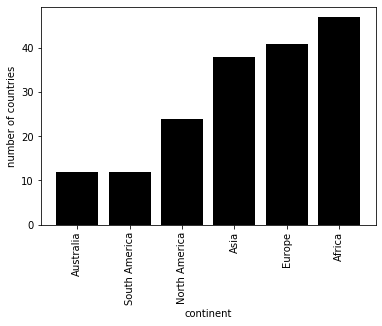
#q23 What is the total population of each continent?
df_pop = pd.read_sql('select continent,sum(population) AS `total population` from countries group by continent order by `total population` DESC',conn)
bl = df_pop['total population']/1000000
df_pop.loc[:,'total population (million)'] = bl
df_pop.drop(columns = 'total population',inplace = True)
df_pop| continent | total population (million) | |
|---|---|---|
| 0 | Asia | 3739.902863 |
| 1 | Africa | 807.299195 |
| 2 | Europe | 792.053486 |
| 3 | North America | 515.041558 |
| 4 | South America | 375.441666 |
| 5 | Australia | 32.163025 |
#q24 What is the total population of each continent? (answer with a plot)
#plt.figure(figsize = (10,3))
plt.bar(df_pop['continent'],df_pop['total population (million)'],fc = 'black')
plt.xlabel('continent')
plt.ylabel('total population (million)')
plt.xticks(rotation=90)([0, 1, 2, 3, 4, 5], <a list of 6 Text xticklabel objects>)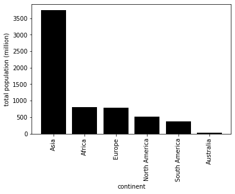
#q25 What is the population of each country in South America?
df_sou = pd.read_sql("select country,sum(population) AS population from countries where continent = 'South America' group by country order by population DESC ",conn)
df_sou
| country | population | |
|---|---|---|
| 0 | Brazil | 188078227 |
| 1 | Colombia | 43593035 |
| 2 | Argentina | 39921833 |
| 3 | Peru | 28302603 |
| 4 | Venezuela | 25730435 |
| 5 | Chile | 16134219 |
| 6 | Ecuador | 13547510 |
| 7 | Bolivia | 8989046 |
| 8 | Paraguay | 6506464 |
| 9 | Uruguay | 3431932 |
| 10 | Guyana | 767245 |
| 11 | Suriname | 439117 |
#q26 What are the top 10 countries that have the largest real GDP?
df_top = pd.read_sql("select country,population * `gdp-per-capita` AS `real GDP` from countries order by `real GDP` DESC ",conn)
df_top_10 = df_top.head(10).copy()
bl = df_top_10['real GDP']/1000000000
df_top_10.loc[:,'real GDP (billion)'] = bl
df_top_10.drop(columns = 'real GDP',inplace = True)
df_top_10| country | real GDP (billion) | |
|---|---|---|
| 0 | United States | 11281.191327 |
| 1 | China | 6569.868565 |
| 2 | Japan | 3594.473830 |
| 3 | India | 3176.520785 |
| 4 | Germany | 2274.855452 |
| 5 | France | 1680.181354 |
| 6 | United Kingdom | 1678.873538 |
| 7 | Italy | 1552.164690 |
| 8 | Brazil | 1429.394525 |
| 9 | Russia | 1271.752506 |
#q27 What are the top 10 countries that have the largest real GDP? (answer with a plot)
ot = sum(df_top[10:]['real GDP'])/1000000000
df_top_10.loc['new'] = ['Other',ot]
df_top_10 = df_top_10.copy()
#plt.figure(figsize = (10,3))
plt.bar(df_top_10['country'],df_top_10['real GDP (billion)'],fc = 'black')
plt.xlabel('contry')
plt.ylabel('GDP (billions)')
plt.ylim((0,20000))
my_y_ticks = np.arange(0, 20000,5000)
plt.yticks(my_y_ticks)
plt.xticks(rotation=90)([0, 1, 2, 3, 4, 5, 6, 7, 8, 9, 10], <a list of 11 Text xticklabel objects>)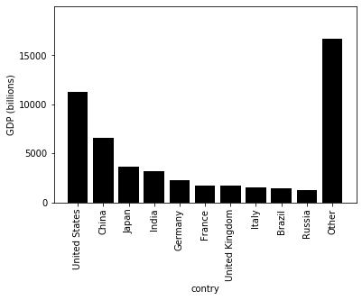
#q28 What are the top 15 countries that have the largest gap between birth rate and death rate?
df_gap = pd.read_sql("select country,`birth-rate`,`death-rate` from countries order by (`birth-rate`-`death-rate`) DESC ",conn)
df_gap.head(15)| country | birth-rate | death-rate | |
|---|---|---|---|
| 0 | Uganda | 47.35 | 12.24 |
| 1 | Yemen | 42.89 | 8.30 |
| 2 | Mali | 49.82 | 16.89 |
| 3 | Oman | 36.24 | 3.81 |
| 4 | Madagascar | 41.41 | 11.11 |
| 5 | Burkina Faso | 45.62 | 15.60 |
| 6 | Niger | 50.73 | 20.91 |
| 7 | Chad | 45.73 | 16.38 |
| 8 | Mauritania | 40.99 | 12.16 |
| 9 | Burundi | 42.22 | 13.46 |
| 10 | Comoros | 36.93 | 8.20 |
| 11 | Somalia | 45.13 | 16.63 |
| 12 | Marshall Islands | 33.05 | 4.78 |
| 13 | Maldives | 34.81 | 7.06 |
| 14 | Togo | 37.01 | 9.83 |
#q29 What are the top 15 countries that have the largest gap between birth rate and death rate? (answer with a plot)
df_gap.head(15)
ax = df_gap.head(15).plot.barh()
ax.set_xlabel("rate")
ax.set_yticklabels(df_gap.head(15).country)[Text(0, 0, 'Uganda'),
Text(0, 0, 'Yemen'),
Text(0, 0, 'Mali'),
Text(0, 0, 'Oman'),
Text(0, 0, 'Madagascar'),
Text(0, 0, 'Burkina Faso'),
Text(0, 0, 'Niger'),
Text(0, 0, 'Chad'),
Text(0, 0, 'Mauritania'),
Text(0, 0, 'Burundi'),
Text(0, 0, 'Comoros'),
Text(0, 0, 'Somalia'),
Text(0, 0, 'Marshall Islands'),
Text(0, 0, 'Maldives'),
Text(0, 0, 'Togo')]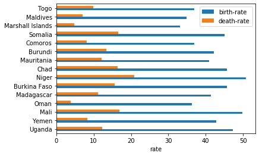
#q30 What is the relationship between death rates and birth rates? (answer with a plot)
plt.rcParams["font.size"] = 10
ax = df_gap.plot.scatter(x='death-rate', y='birth-rate', c='black')
ax.set_xlabel('death-rate')
Text(0.5, 0, 'death-rate')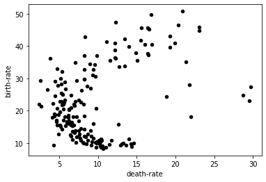
#q31 Did you notice the six outliers? Which countries are they?
df_part = df_gap[df_gap['death-rate']>16]
df_part = df_part[df_part['birth-rate'] < 30]
df_1 = df_part[['country','death-rate','birth-rate']]
df_1.sort_values(by=['death-rate']).reset_index(drop=True)| country | death-rate | birth-rate | |
|---|---|---|---|
| 0 | Namibia | 18.86 | 24.32 |
| 1 | Zimbabwe | 21.84 | 28.01 |
| 2 | South Africa | 22.00 | 18.20 |
| 3 | Lesotho | 28.71 | 24.75 |
| 4 | Botswana | 29.50 | 23.08 |
| 5 | Swaziland | 29.74 | 27.41 |
#q32 What is the correlation between death rates and birth rates?
countries.corr()['death-rate']["birth-rate"]0.3965086117752512#q33 What is the relationship between GDP per capita and the number of phones per capita?
plt.rcParams["font.size"] = 10
ax = countries.plot.scatter(x='gdp-per-capita', y='phones', c='black')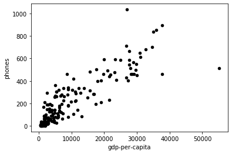
#q34 What is the correlation between GDP per capita and number of phones per capita?
countries.corr()['phones']['gdp-per-capita']0.8786946640591311#q35 What is the relationship between literacy and GDP per capita?
plt.rcParams["font.size"] = 10
ax = countries.plot.scatter(x='literacy', y='gdp-per-capita', c='black')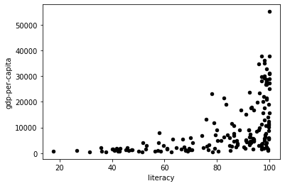
#q36 What is the relationship between GDP per capita and death rates?:
plt.rcParams["font.size"] = 10
ax = countries.plot.scatter(x='gdp-per-capita', y='death-rate',c='black')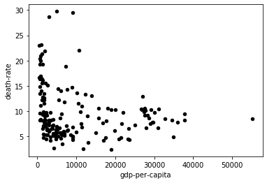
#q37 What is the relationship between GDP per capita and birth rates?
plt.rcParams["font.size"] = 10
ax = countries.plot.scatter(x='gdp-per-capita', y='birth-rate',c='black')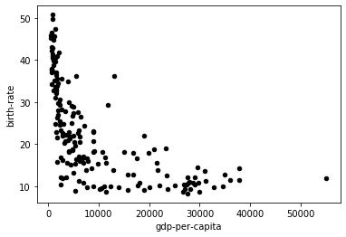
#q38 What is the relationship between GDP per capita and the inverse of birth rates?
countries['inverse'] = 1/countries['birth-rate']
plt.rcParams["font.size"] = 10
ax = countries.plot.scatter(x='gdp-per-capita', y='inverse',c='black')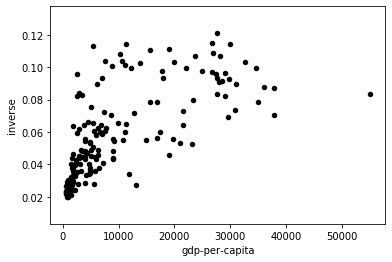
#q39 fit a y = m * x + n line to the scatter plot in question 38 using the least-squares method; what are the coefficients m and n?
countries["1"] = 1
res = np.linalg.lstsq(countries[["gdp-per-capita", "1"]], countries["inverse"], rcond=None)
coefficients = res[0] # coefficients is (m,n:
m = coefficients[0] # slope
n = coefficients[1] # intercept
coef_tuple = (m,n)
coef_tuple(1.8365703926233426e-06, 0.03916624252079354)#q40 plot the regression line to the scatter plot
ax = countries.plot.scatter(x='gdp-per-capita', y='inverse', c = 'gray')
countries["fit"] = countries["gdp-per-capita"] * m + n
countries.plot.line(x='gdp-per-capita', y='fit', c='red', ax=ax)<matplotlib.axes._subplots.AxesSubplot at 0x1a6a75308d0>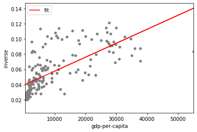
conn.close()